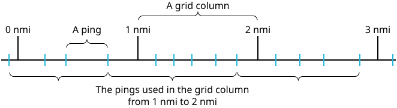
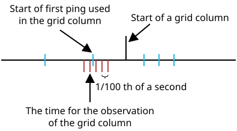

This section explains the details on how pings are aligned relative to various axes.
The interpretation grid, defined in [Survey configuration - Grid], consists of grid columns of constant width. A ping contributes only to one grid column even though its extent overlaps with two grid columns. Which pings that contribute to which grid column is found by rounding downward as illustrated in the figure below:

The observation date and time for a grid column is found similarly by rounding downward to the nearest 1/100th of a second from the start of the first ping used in that grid column:
